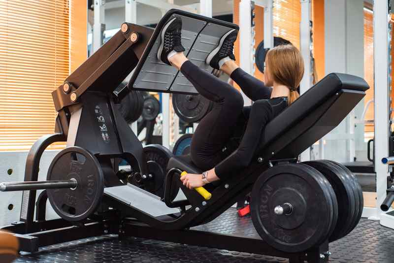

LEG PRESS MACHINE
A leg press machine usually comes in two types – a horizontal leg press, which is the standard version of this equipment, and the inclined leg press, which comes with a seat that reclines at a 45-degree angle. When using the inclined leg press, you’ll need to sit at an angle and press your legs diagonally upward. The Leg Press Machine promotes leg development by isolating the muscles that comprise the leg. This machine mainly engages the gluteal muscles, quadriceps, and hamstrings.
Read More
